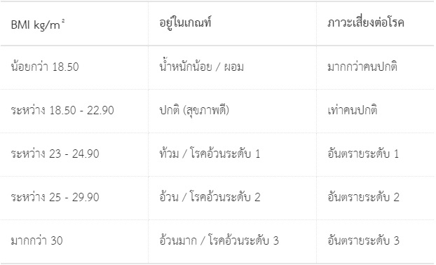

โปรแกรมวัดค่าดัชนีมวลกาย(BMI)
การหาค่าดัชนีมวลกาย (Body Mass Index : BMI) คือเป็นมาตรการที่ใช้ประเมินภาวะอ้วน
และผอมในผู้ใหญ่
ตั้งแต่อายุ 25 ปีขึ้นไป สามารถทำได้โดยการชั่งน้ำหนักตัวเป็นกิโลกรัม
และวัดส่วนสูงเป็นเซนติเมตร
แล้วนำมาหาดัชมีมวลกาย โดยใช้โปรแกรมวัดค่าความอ้วน
ข้างต้น
Note. ทฤษฎี การประเมินระดับความอ้วนด้วยสูตรคำนวน BMI เป็นการประเมินจากค่าเฉลี่ย
เชิงสถิติ
ผลการคำนวณที่ได้อาจคลาดเคลื่อนจากความเป็นจริง โดยเฉพาะผู้ที่ออกกำลัง
กายเป็นประจำ
หรือกลุ่มนักเพาะกายที่มีปริมาณกล้ามเนื้อสูง
